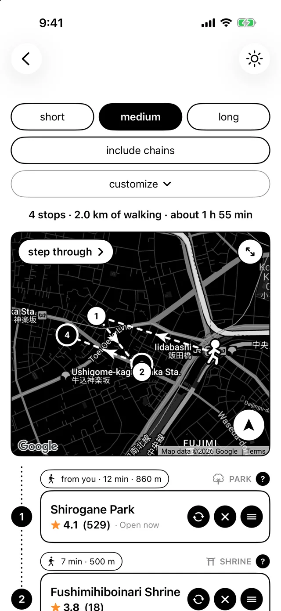
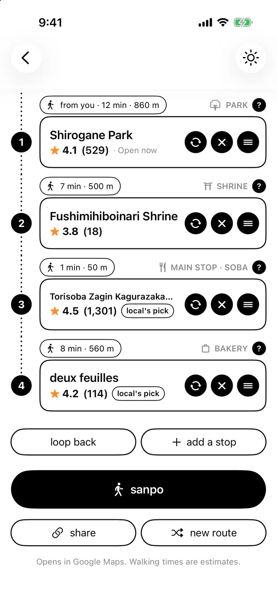

one-tap walks
Press sanpo and get a short walk of good local places in a sensible order, from where you stand. Choose short, medium or long.
There's a main stop, usually the meal, and the other stops lead up to it. Along the way: shrines and temples, shops, parks, museums, shopping streets, cafés, bakeries and sentos, with walking times and distances between each stop. Places locals love carry a "local's pick" tag.
Then make it yours: how many are walking, whether you're hungry, what you like and what to leave out, including no alcohol. Swap, remove or move any stop, or add one by kind: a bathroom, a konbini, a shrine. Chains are left out unless you switch them on.

